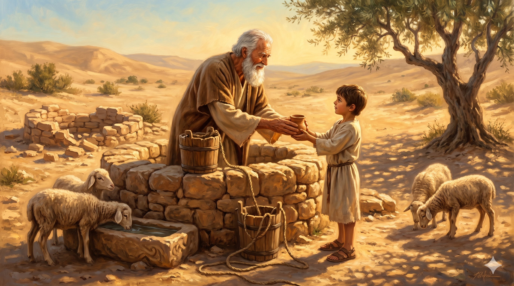

저녁 빛이 스미는 브엘세바 언덕 — 아버지 아브라함에게서 이어받은 지팡이를 손에 쥔 이삭이 아들 야곱을 향해 걸어가는 상징적 장면
믿음으로 이삭은 장차 있을 일에 대하여 야곱과 에서에게 축복하였으며 … 이 사람들은 다 믿음을 따라 죽었으며 약속을 받지 못하였으되 그것들을 멀리서 보고 환영하며 또 땅에서는 외국인과 나그네임을 증언하였으니 — 히브리서 11:20, 13
이삭의 생애가 막을 내린 지금, 우리는 한 걸음 물러나 그의 전 생애를 바라보게 됩니다. 히브리서 11장의 '믿음의 장'은 아브라함에게 네 절(8–12), 야곱에게 두 절(21), 요셉에게 한 절(22)을 할애합니다. 이삭에게는 단 한 절 — "믿음으로 이삭은 장차 있을 일에 대하여 야곱과 에서에게 축복하였으며"(11:20) — 만 주어졌습니다. 드라마틱한 사건도, 수많은 순례도, 요란한 기적도 기록되어 있지 않습니다. 아버지와 아들 사이, 두 세대 사이의 짧은 다리 같은 생애. 그러나 바로 그 한 절이 이삭의 일생을 가장 정확하게 요약합니다 — 그는 아버지의 믿음을 이어받아 아들에게 넘겨준, 거룩한 계주자였습니다.
이삭의 삶에는 빛나는 순간이 많지 않습니다. 모리아 산에서는 수동적으로 나무를 지고 올라갔고, 아내는 종이 구해다 주었고, 아버지가 판 우물을 다시 팠으며, 축복마저 속임당했고, 편애 때문에 가정은 쪼개졌습니다. 그러나 이 모든 연약함 속에서 그는 결코 언약의 자리를 이탈하지 않았습니다. 기근 중에도 애굽으로 내려가지 않고 블레셋 땅에 머물며 백 배의 복을 거두었고(창 26:12), 다툼의 우물 대신 '르호봇(넓은 곳)'을 찾아냈으며, 속임을 당한 후에도 다시 야곱을 불러 정식으로 축복했습니다(창 28:1–4). 평범했지만 자리를 지킨 사람. 그것이 이삭의 위엄입니다. 하나님은 아브라함처럼 떠나는 사람도, 야곱처럼 씨름하는 사람도 사용하시지만 — 이삭처럼 한 자리에서 끝까지 서 있는 사람도 똑같이 귀하게 쓰십니다.

황혼의 르호봇 우물가 — 아브라함이 남긴 우물을 다시 파서 물을 길어 아들에게 건네는 이삭, 믿음의 계승을 상징하는 따뜻한 장면
세상은 자주 영웅의 인생만 기록합니다. 그러나 하나님의 구원 역사는 아브라함-이삭-야곱처럼 '눈에 띄는 세대' 사이에, 반드시 '눈에 띄지 않는 세대'가 다리를 놓아야 이어집니다. 어쩌면 당신의 자리도 그 다리일지 모릅니다. 부모 세대의 신앙을 자녀 세대로 옮기는 한 세대, 전임자가 세운 예배를 후임자가 이어받도록 묵묵히 섬기는 한 시즌, 드러나지 않지만 꼭 필요한 그 자리. 이삭의 생애는 우리에게 말합니다 — 하나님의 기록 방식은 사람과 다릅니다. 한 절로 요약되는 평범한 믿음도, 영원 속에서는 한 장 전체만큼 귀합니다.
또한 이삭처럼 '다시 파는 삶'을 살아야 합니다. 아버지가 판 우물을 원수들이 메웠을 때, 그는 싸우기보다 다시 팠습니다(창 26:18). 선배 세대가 세웠다가 무너진 예배, 기도, 사랑의 습관이 있습니까? 새로운 것을 만들려는 야망보다 먼저, 이미 있었던 좋은 것을 다시 파내는 겸손이 필요합니다. 복음의 우물은 새로 뚫는 사람만큼이나 다시 파는 사람을 통해 이어져 왔습니다. 당신의 평범한 오늘이 — 다음 세대가 목을 축일 그 우물입니다.
한 절로 요약되는 생애라도 언약을 이어 주면 그것으로 충분합니다.
다시 파는 자, 한 자리를 지키는 자 — 하나님은 그런 이삭을 통해서도
구원의 역사를 결코 멈추지 않으십니다.